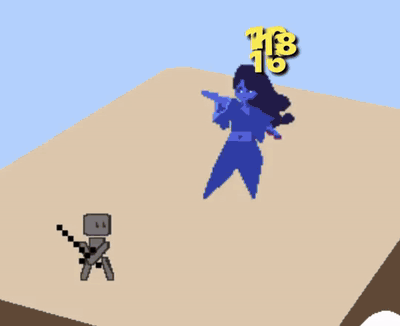
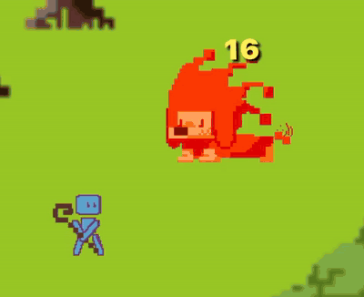
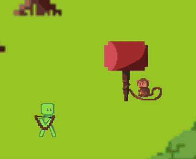
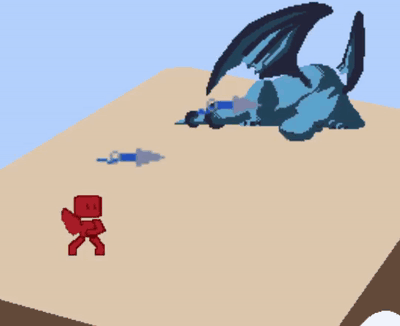

Replay a tutorial
Open Settings and look for the tutorial replay options. Choose a workout, battle, character, or Spotter walkthrough to revisit the app’s instructions.
App Guide
Learn the menus, log your first workout, or explore battles. Choose a topic and open the instructions you need.
Sign in to ProxyFit, then choose a topic. The short overview stays visible, and the detailed walkthroughs open when you need them.
Add exercises to your current session, then complete the session to save the history and apply workout rewards.
Add To Workout builds the session; the final Complete Workout action saves it. You can review your entries before that final step.
Choose the unit you use, such as kg or lb, and enter the result for each set. You can log bodyweight and use the available set types, including normal, warm-up, failure, and drop sets.
| Set | Weight | Reps |
|---|---|---|
| 1 | 40 kg | 10 |
| 2 | 40 kg | 8 |
Cardio and sports use the fields available for that activity. Enter time, distance, calories burned, or other relevant results. Use the field controls to add or remove tracking options when needed. The values should describe the activity you actually completed.
Save a group of exercises as a routine to reuse on another day. You can build one from the Workout routines area or use Save Workout as Routine on the completion screen. Choose a saved routine to make it active, then record that day’s results.
Use the add-exercise option in an exercise category to create your own exercise and choose its tracking fields. Free accounts can save 4 routines; Premium supports unlimited saved routines.
Open Workout History from Workout to review saved sessions. Expand a session or exercise to inspect the recorded sets. Free accounts can view the last 3 months of exercise history; Premium adds all-time history and the full analytics dashboard.
If you have a coach, open assigned workouts from your coaching workspace, read the exercise instructions, and log through the normal Workout flow. Completing the linked training lets the coach review your results.
Battles are an optional way to use the character progression you earn through training. Start from the Battle tab.




When you finalize a workout, the completion screen applies the earned XP and stat points. The Battle menu is where you manage those points and your character setup.
Use the Shop to review available characters, skins, skills, and Spotter options. Each item shows its cost or requirements. You can keep using workout, nutrition, and coaching records whether or not you play battles.
Spotter Points can also be earned through completed workouts and battle progress. Review rewards on the results screens and check your balance and item prices in the Shop.
Use the in-app explanations or continue with a guide for a specific feature.
Open Settings and look for the tutorial replay options. Choose a workout, battle, character, or Spotter walkthrough to revisit the app’s instructions.
Read the Coaching guide, Nutrition & Health guide, or fitness articles. For an app issue, visit Support.